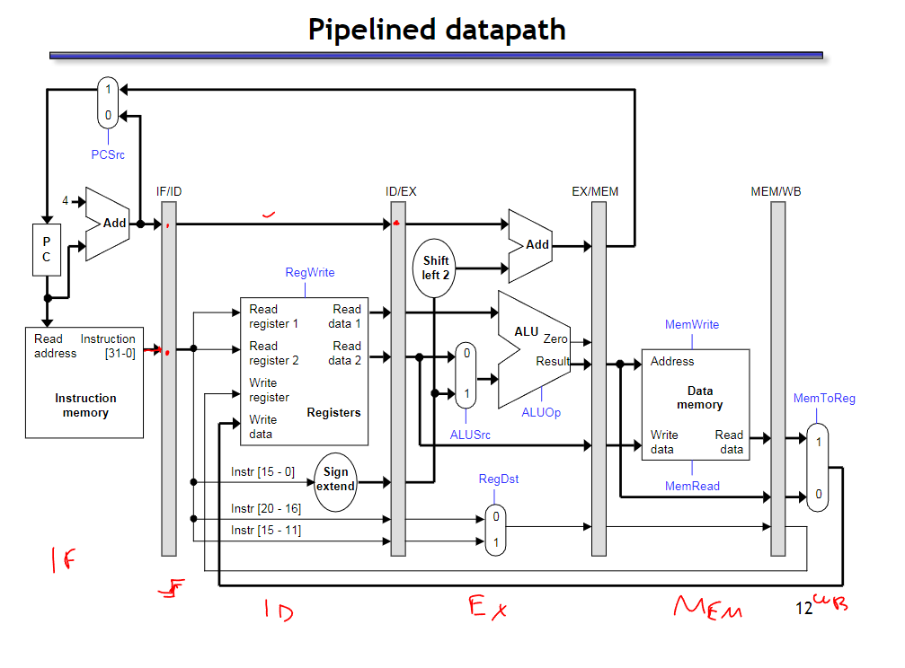
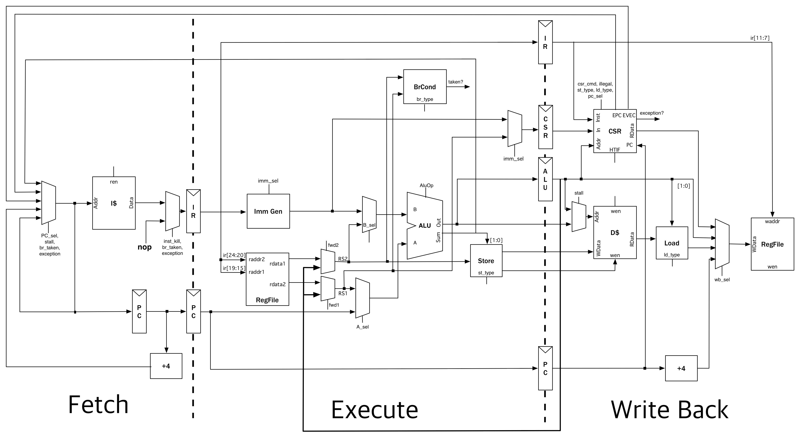
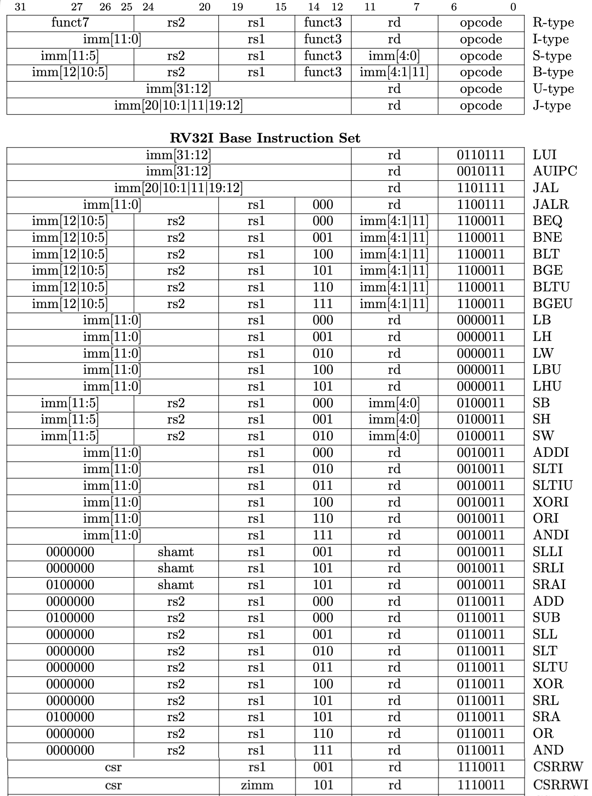

EECS151_Project_check1
EECS 151 Project-ASIC
Intro
Hey! In 2024 spring, I am taking EECS 151/251A: Introduction to Digital Design and Integrated Circuits and the ASIC lab of this course. You can get more info of labs from here. And click here to get project details.

This lab is very challenging if you are not Berkeley undergrad (or even their own undergrads would feel troublesome because the heavy workload…). The lab stage includes FIFO design based on skywater130, parallel optimization by adding arbiter, and SRAM design and layout optimization. After labs, the project is to tackle with the 3-stages RISC-V CPU design, which requires a lot of effort and a lot of time, especially if you are unfamiliar with the RISC-V instructions and Verilog codes.👊
Things to note:
It is illegal to copy or download configuration files from Berkeley server, so I think self-study is almost impossible without test permissions on the Berkeley server as well as Skywater130 configuration.
And all relevant codes will be updated to my Github account after my project finished, due to academic integrity. ❗
03/21/2024
Checkoff1 passed~~(Timmy got a fever so I have to finish the whole chekcoff myself😭) I will update pipeline diagram and ALU solution during spring break.
EECS 151/251A ASIC Project Specification: Checkpoint 1
ALU design and pipeline diagram
The ALU that we will implement in this lab is for a RISC-V instruction set architecture. Pay close attention to the design patterns and how the ALU is intended to function in the context of the RISC-V processor. In particular it is important to note the separation of the datapath and control used in this system which we will explore more here.
The specific instructions that your ALU must support are shown in the tables below. The branch condition should not be calculated in the ALU. Depending on your CPU implementation, your ALU may or may not need to do anything for branch, jump, load, and store instructions (i.e., it can just output 0).
Testing the Design
Verilog Testbench
One way of testing Verilog code is with testbench Verilog files. The outline of a test bench file has been provided for you in ALUTestbench.v. There are several key components to this file:
timescale 1ns / 1ps- This specifies, in order,the reference time unit and the precision. This example sets the unit delay in the simulation to 1ns (i.e.#1= 1ns) and the precision to 1ps (i.e. the finest delay you can set is#0.001= 1ps).The clock is generated by the code below. Since the ALU is only combinational logic, this is not necessary, but it will be a helpful reference once you have sequential elements.
- The
initialblock sets the clock to 0 at the beginning of the simulation. You should be sure to only change your stimulus when the clock is falling, since the data is captured on the rising edge. Otherwise, it will not only be difficult to debug your design, but it will also cause hold time violations when you run gate level simulation. - You must use an always block without a sensitivity list (the
@part of an always statement) to cause the clock to run automatically.
1
2
3
4
5
6parameter Halfcycle = 5; //half period is 5ns
localparam Cycle = 2*Halfcycle;
reg Clock;
// Clock Signal generation:
initial Clock = 0;
always #(Halfcycle) Clock = ̃Clock;- The
task checkOutput; - this task contains Verilog code that you would otherwise have to copy paste many times. Note that it is not the same thing as a function (as Verilog also has functions).{$random} & 31'h7FFFFFFF- $random generates a pseudorandom 32-bit integer. A bitwise AND will mask the result for smaller bit widths.
Test Vector Testbench
An alternative way of testing is to use a test vector, which is a series of bit arrays that map to the inputs and outputs of your module. The inputs can be all applied at once if you are testing a combinational logic block or applied over time for a sequential logic block (e.g. an FSM).
You will write a Verilog testbench that takes the parts of the bit array that correspond to the inputs of the module, feeds those to the module, and compares the output of the module with the output bits of the bit array. The bit vector should be formatted as follows:
1 | |
Open up the skeleton provided to you in ALUTestVectorTestbench.v. You need to complete the module by making use of $readmemb to read in the test vector file (named testvectors.input), writing some assign statements to assign the parts of the test vectors to registers, and writing a for loop to iterate over the test vectors.
The syntax for a for loop can be found in ALUTestbench.v. $readmemb takes as its arguments a filename and a reg vector, e.g.:
1 | |
You will also have to generate the test vectors used in your testbench. A test vector can either be specified in Verilog, or generated using a higher-level language like Python.
Test vectors are of the format specified above, with the 7 opcode bits occupying the left-most bits. We’ve also provided a test vector generator written in Python. However, the only R-type instruction it tests is add. Update tests/ALUTestGen.py to generate test vectors for all R-type instructions. You may find the comp function useful for performing signed comparisons.
Pipeline diagram
About pipeline diagram, we need to achieve a 3-stage RISCV, but typically 5- stage is common. It’s easy to think when you have IF, ID, EX, MEM, WB parallel in one cycle, just like this diagram shown:


From diagram you can observe, for example, it’s easy to obtain one cycle when you just take one opeation in one period.(Maybe not easy XD.. I mean it’s easy to understand but hard to design or draw without reference)
But for mutli-stage pipeline, when you need to take 3~5 operations in one period, essentially we set control unit to assign instructions for each period.

It’s really important to focus on signal path and data path, as well as the clock for each stage. Considering period, it’s necessary to set mux in this problem to set critical path/minimum frequency. Sometimes we will ignore mux in that typically we design 5-stage pipeline, in that case, we can just give mux between each stage. However, for this project, if you want to design 3-stage, which means only 2 mux can be added, it is necessary to merge some stages.
For me and my partner Timmy(senior, Chinese American from taiwan), :our idea is just as follows. First we find a 5-stage reference, and consider which stage can be eliminated or merged. For mux, in this project checkoff you need to point out FFs and Regs specifically, really a heavy workload, right? In other cases I think simple mux should be fine. 🙂

Needs to be corrected, Kevin pointed out some problems in this diagram, such as not being able to use two Regfilest
ALU Section
Intro
TO DO:
In this section, you will be designing and testing an ALU for later use in the semester. A header file containing define statements for operations (ALUop.vh) is provided inside the src directory of this lab. This file has already been included in an ALU template given to you in the same folder (ALU.v), but you may need to modify the include statement to match the correct path of the header file. Compare ALUop input of your ALU to the define statements inside the header file to select the function ALU is currently running. For ADD and SUB, treat the operands as unsigned integers and ignore overflow in the result. Definition of the functions is given below:
| Op Code | Definition |
|---|---|
| ADD | Add A and B |
| SUB | Subtract B from A |
| AND | Bitwise and A and B |
| OR | Bitwise or A and B |
| XOR | Bitwise xor A and B |
| SLT | Perform a signed comparison, Out=1 if A < B |
| SLTU | Perform an unsigned comparison, Out = 1 if A < B |
| SLL | Logical shift left A by an amount indicated by B[4:0] |
| SRA | Arithmetic shift right A by an amount indicated by B[4:0] |
| SRL | Logical shift right A by an amount indicated by B[4:0] |
| COPY_B | Output is equal to B |
| XXX | Output is 0 |
Given these definitions, complete ALU.v and write a testbench tb ALU.v that checks all these operations with random inputs at least a 100 times per operation and outputs a PASS/FAIL indicator.

Assignments
ALU and ALUdec
1 | |
1 | |
This python file is to generate Vector_testbench and you can observe R_type generation step is empty except ADD.
1 | |
Opcode reference
1 | |
1 | |
VectorTestbench
1 | |